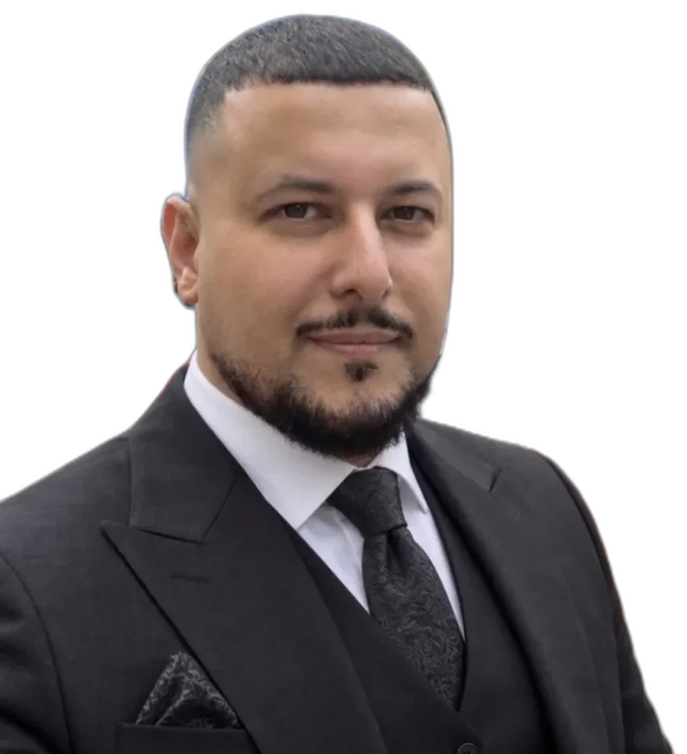

Schön, dass du hier bist. Frankfurter, Unternehmer, Student – und einer, der lieber gut fragt als schnell antwortet.

Was ist wertvoller – jetzt, hier, in dieser Situation?
Scroll – es geht weiter
Kurz gesagt
Ich hab nie nur eine Sache gemacht.
Pflege. Dann ein eigenes Unternehmen. Dann Pflegequalität prüfen. Irgendwann hab ich gemerkt: Alles läuft auf dieselbe Frage hinaus. Was ist gerade wirklich wichtig? Für den Menschen vor mir. Und für mich.
Deshalb lerne ich weiter. Psychologie, weil ich Menschen verstehen will. Islamische Studien, weil ich wissen will, wo Verantwortung herkommt. Und ich schreibe – weil Schreiben die ehrlichste Art ist zu denken.
Diese Seite ist kein Lebenslauf und kein Angebot. Eher ein Spaziergang. Lies, was dich anspricht. Den Rest lass liegen.
Aus Erfahrung wurde Haltung.
Aus Haltung wurde Verantwortung.
Aus Verantwortung wurde Wirkung.
Mein Weg
Sieben Stationen, eine Richtung.
Kein Lebenslauf mit Jahreszahlen. Sieben Stationen, die etwas hinterlassen haben – eine Lektion, eine Fähigkeit, eine Haltung.
1 / 7
Station 1
Pflege als Grundlage
Am Anfang stand kein Plan. Da stand ein Mensch, der Hilfe brauchte. Die Pflege hat mir beigebracht, genau hinzusehen: auf Würde, auf kleine Signale, auf Verlässlichkeit, über die man nicht verhandelt.
Gute Systeme sind nie abstrakt. Ob sie taugen, entscheidet sich am Menschen.
Station 2
Verantwortung übernehmen
Irgendwann hat es nicht mehr gereicht, selbst gut zu arbeiten. Es ging darum, Abläufe so zu bauen, dass andere gut arbeiten können. Aus Praxis wurde Organisation. Aus Organisation wurde Führung.
Führung fängt da an, wo man Verantwortung teilt statt abgibt.
Station 3
Ein Unternehmen bauen
Ich habe ein eigenes Unternehmen aufgebaut – und Strukturen, die auch an schlechten Tagen halten. Für die Menschen, die wir versorgen, und für die, die diese Arbeit machen.
Ein Unternehmen ist so stark wie seine Ordnung an schwierigen Tagen.
Station 4
Qualität prüfen
Als Pflegegutachter beim Medizinischen Dienst Hessen habe ich Versorgung von der anderen Seite gesehen: nicht machen, sondern einordnen, prüfen, begründen.
Qualität ist keine Behauptung. Sie muss sich begründen lassen.
Station 5
Technik, die Zeit zurückgibt
Ich will keine Technik, die Menschen aus dem Prozess drängt. Ich will Technik, die Zeit zurückgibt – dort, wo Verwaltung Kraft kostet, die woanders fehlt.
Technik ist gut, wenn sie Raum für Menschlichkeit schafft.
Station 6
Menschen begleiten
Menschen begleiten heißt nicht, fertige Antworten zu liefern. Es heißt: genauer zuhören, die richtige Frage stellen, den nächsten Schritt möglich machen.
Klarheit kommt selten vom Ratschlag. Meistens von der richtigen Frage.
Station 7
Weiterlernen
Ich studiere Psychologie und vertiefe mich in islamische Studien. Kein Titel – eine Vertiefung. In den Menschen, und in die Frage, wo Verantwortung ihre Richtung herbekommt.
Wer andere begleiten will, darf selbst nie aufhören zu lernen.
Überzeugungen kosten nichts, solange alles leicht ist. Im Konflikt zeigt sich, was trägt. In der Mitte steht der Mensch. Alles andere dreht sich darum – und muss sich daran messen lassen.
Systeme sollen Menschen dienen.
Nicht umgekehrt. Jede Struktur muss zeigen, ob sie entlastet oder nur verwaltet.
Führung braucht Klarheit und Verantwortung.
Wer führt, schuldet anderen Orientierung. Auch wenn die Antwort unbequem ist.
Würde darf nicht der Effizienz geopfert werden.
Was bleibt von Effizienz, wenn der Mensch darin keinen Platz mehr findet?
Lernen ist kein Lebensabschnitt, sondern eine Haltung.
Jede Rolle hat mir etwas beigebracht. Die wichtigste Lektion: Man ist nie fertig.
Technik ist dann gut, wenn sie Raum für Menschlichkeit schafft.
Nicht Technik um der Technik willen, sondern Technik im Dienst des Menschen.
Glaube gibt Richtung, Verantwortung zeigt sich im Handeln.
Überzeugungen sind erst glaubwürdig, wenn man sie im Alltag wiedererkennt.
Drei Orte
Frankfurt. Istanbul. Doha.
Drei Orte, drei Blickwinkel. Keine Geschäftsadressen – Perspektiven, die mich prägen. Und gerade jetzt, während du liest, leben sie in drei verschiedenen Stunden.
Frankfurt
50.11° N · 8.68° O
Hier lebe und arbeite ich. Frankfurt steht für das, was Verlässlichkeit braucht: Ordnung, Verbindlichkeit und den Mut, Verantwortung zu übernehmen.
Guten Tag.
Istanbul
41.01° N · 28.98° O
Eine Stadt zwischen zwei Kontinenten. Sie erinnert daran, dass Brücken nicht zufällig entstehen. Istanbul steht für Herkunft, Tempo und die Fähigkeit, Welten zu verbinden.
İyi günler.
Doha
25.29° N · 51.53° O
Doha steht für den Blick nach vorn: für Internationalität, für Räume, die gerade entstehen, und dafür, dass Tradition und Zukunft sich nicht ausschließen.
أهلًا وسهلًا.
Danke fürs Lesen.
Die Frage nehme ich dir nicht ab. Aber ich geb sie dir gern mit:
Was ist wertvoller – jetzt, hier, in dieser Situation?